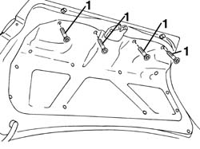
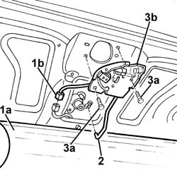

7025B38 boot lid lock - r+r
- Path
- Procedures > 70 FITTINGS > 7025 COMPARTMENT LIDS > 7025B boot lid > 7025B38 boot lid lock - r+r
- Kind
- repair procedure (removal / refitting; the operation number is the code)
- Applies to
- all engines; all production periods
- Interactive page
- https://sloeber94.github.io/elrnDB-a156/en/#/3238739
Applies to: all engines; all production periods
 Removing
Removing
 Refitting
Refitting1. Undo the bolts fixing the inner cover.

Applies to: all engines; all production periods
1. Lower the inner cover (1a) and disconnect the electrical connection (1b).
 | Name | Connector |
|---|---|---|
1b | Boot opening switch |
2. Disconnect the rod between the closure and the lock.
3. Undo the bolts (3a) and remove the lock (3b).

Applies to: all engines; all production periods
Refitting
RemovingCheck that the catch is undamaged.
Reposition the lock and tighten the bolts.
Connect the rod between the closure and the lock.
Connect the electrical connection.
Test that the lock works properly and is correctly aligned with the striker.
Reposition the inner cover and fix it using the bolts.